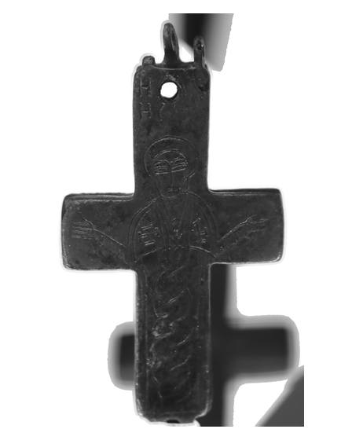
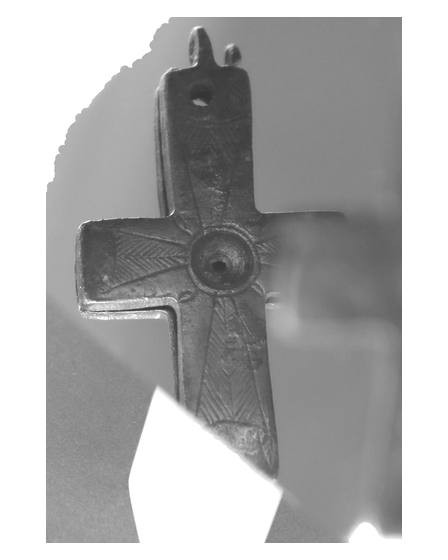

Catalog › CE-0581 · COM2026-137174804
Cruce-relicvar bivalvă din necropola San Vito di Luzzi, Muzeul Arheologic Național al Sibaritidei
sec. VII–VIII (601–800) · San Vito di Luzzi, Italia · Museo archeologico nazionale della Sibaritide
double-sided reliquary cross (enkolpion); c. VII–VIII (601–800); found at San Vito di Luzzi, Italia; kept at Museo archeologico nazionale della Sibaritide.




Identificare
- Categorie
- Encolpion bivalv (relicvar)
Iconografie
- Descriere avers
- Figură; titlul fișierului indică „s. Giovanni vescovo” (Sf. Ioan episcop).
- Descriere revers
- Titlul fișierului indică „croce di Malta” (cruce maltească).
Datare și atribuire
- Datare
- sec. VII–VIII (601–800)
Descoperire
- Localitate
- San Vito di Luzzi
- Țară
- Italia
- Context
- Necropolă / mormânt
- Coordonate
- 39.4461° N, 16.2873° E
- Precizia locului
- Doar localitatea
Păstrare și referințe
- Colecție
- Museo archeologico nazionale della Sibaritide
- Bibliografie
- Fotografie: Francesco Bini (Sailko), Wikimedia Commons, licență CC BY-SA 4.0, https://commons.wikimedia.org/?curid=137174804 (accesat 17.10.2026).
- Figura
- Wikimedia Commons, pagina 137174804
- Observații
- Titlul fișierului: „Croce reliquiario (encolpion) a doppia valva”, „da necropoli di S. Vito di Luzzi”. Atribuirea fețelor la cele două fotografii (137174804 și 137174808) nu e certă; fundal de vitrină. Altă vedere: pagina 137174807. Coordonate: ale localității (aproximative), nu date în sursă.
Citare: Corpus Encolpiorum, CE-0581, Cruce-relicvar bivalvă din necropola San Vito di Luzzi, Muzeul Arheologic Național al Sibaritidei, --root/piese/COM2026-137174804/ (accesat 2026-10-17).